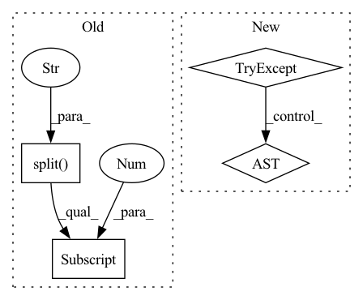

Pattern ID :25577
Before Change
cls = 2 // covid
else:
cls = 3
seg_path = os.path.join(self.seg_root,data_path.split("/")[-2],data_path.split("/")[-2] +"_"+data_path.split("/")[-1])
volume=sitk.ReadImage(data_path)
data=sitk.GetArrayFromImage(volume)
After Change
valid=M.sum(1).sum(1)>500
M=M[valid,:,:]
data=data[valid,:,:]
try:
xx, yy, zz = np.where(M > 0)
data = data[min(xx):max(xx), min(yy):max(yy), min(zz):max(zz)]
M = M[min(xx):max(xx), min(yy):max(yy), min(zz):max(zz)]
except :
print(data_path)
//data=np.stack([data,data,data],0)In pattern: SUPERPATTERN
Frequency: 4
Non-data size: 4
Instances Fragment ID: 77760642
Project Name: chenwwweixiang/opencoviddetector
Commit Name: 6005fac74d087e30405719ad6e3830a53cbed8cb
Time: 2020-04-21
Author: chenwx_thu@foxmail.com
File Name: data/dataset.py
M Class Name: NCPDataset
N Class Name: NCPDataset
M Method Name: __getitem__(2)
N Method Name: __getitem__(2)
M Parent Class: Dataset
N Parent Class: Dataset
M File Name: data/dataset.py
N File Name: data/dataset.py
M Start Line: 34
M End Line: 63
N Start Line: 67
N End Line: 97
Before Change
checkpoint_list = list()
for el in os.listdir(checkpoint_dir):
if el.endswith(".pt") and el != "best.pt":
checkpoint_list.append(int(el.split(".")[0].split("_")[1] ))
if len(checkpoint_list) <= keep:
return
else:After Change
checkpoint_list = list()
for el in os.listdir(checkpoint_dir):
if el.endswith(".pt"):
try:
checkpoint_list.append(int(el.replace("checkpoint_", "").replace(".pt", "")))
except ValueError:
pass
if len(checkpoint_list) <= keep:
return Fragment ID: 77760640
Project Name: digitalphonetics/ims-toucan
Commit Name: 61c4708bf1d6d9dad64269da6258e4ffb22b7001
Time: 2022-09-21
Author: florian.lux@ims.uni-stuttgart.de
File Name: Utility/utils.py
M Class Name: AnonimousClass
N Class Name: AnonimousClass
M Method Name: delete_old_checkpoints(2)
N Method Name: delete_old_checkpoints(2)
M Parent Class:
N Parent Class:
M File Name: Utility/utils.py
N File Name: Utility/utils.py
M Start Line: 24
M End Line: 26
N Start Line: 24
N End Line: 30
Before Change
// 映射学生
orirow_2_uid = {}
for _, row in df_que_test.iterrows():
orirow_2_uid[int(row["orirow"].split(",")[0] )] = row["uid"]
// map
que_test["uid"] = que_test["orirow"].map(orirow_2_uid)After Change
save_df(que_test,"que_test",save_dir)
save_df(que_win_test,"que_win_test",save_dir)
try:
print("Start 基于题目的长短序列")
que_update_ls_report(que_test, que_win_test, report,save_dir=save_dir) // short long 结果
except :
print("Fail 基于题目的长短序列")
return que_test,que_win_test Fragment ID: 77760645
Project Name: pykt-team/pykt-toolkit
Commit Name: 1e954fe5312232f984f38b09a23fbd99ddb5f4ae
Time: 2022-10-12
Author: 2808581543@qq.com
File Name: examples/extract_quelevel_raw_result.py
M Class Name: AnonimousClass
N Class Name: AnonimousClass
M Method Name: add_question_report(6)
N Method Name: add_question_report(6)
M Parent Class:
N Parent Class:
M File Name: examples/extract_quelevel_raw_result.py
N File Name: examples/extract_quelevel_raw_result.py
M Start Line: 247
M End Line: 269
N Start Line: 153
N End Line: 169
Before Change
def load_data(obj, dataset):
try:
name = dataset.name.split("/")[-1]
vals = dataset[()]
obj.__setattr__("name", val)
except:
print_load_error(obj, dataset)After Change
def load_data(grp, parent_obj, grp_name):
Load a data in the class instance.
try:
parent_obj.__setattr__(grp_name, grp[()])
except :
print_load_error(grp_name)
Fragment ID: 77760639
Project Name: nlesc-jcer/qmctorch
Commit Name: c58ccbc316cc9f06fb680b09352b63c758290a8f
Time: 2020-04-20
Author: nicolas.gm.renaud@gmail.com
File Name: qmctorch/utils/hdf5_utils.py
M Class Name: AnonimousClass
N Class Name: AnonimousClass
M Method Name: load_data(3)
N Method Name: load_data(2)
M Parent Class:
N Parent Class:
M File Name: qmctorch/utils/hdf5_utils.py
N File Name: qmctorch/utils/hdf5_utils.py
M Start Line: 45
M End Line: 52
N Start Line: 55
N End Line: 62